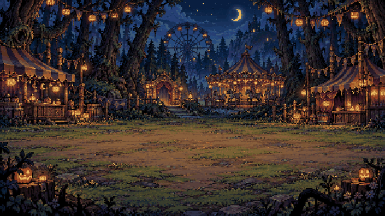
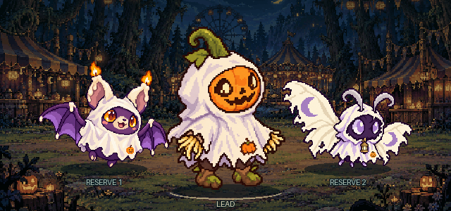
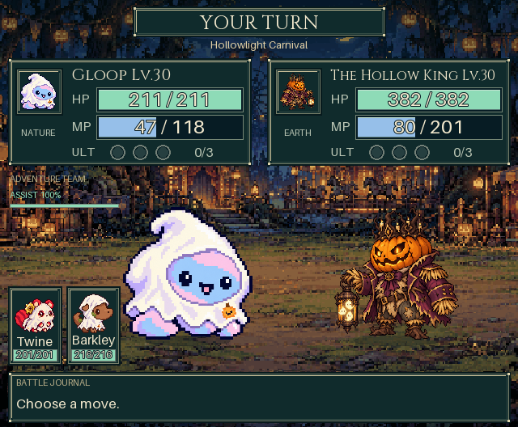

The Hollowlight Carnival
A lantern-lit detour, three new companions, and a little ghost costume tailored to every beast.

Follow the lanterns. Find your way home.
Randomized adventures, occasional packs, and the Hollow King waiting at the final gate.
Meet the Carnival
Your Carnival companions
Patchkin leads the way, with Wickwing and Veilmoth behind. Each wears its own fitted ghost costume.

Every beast gets a fitted costume
Unlock the 2026 ghost costume once, then choose which companions wear it in Gear. Their equipped gear keeps all of its stats.
Equipped gear
Little ghost costume · 2026
In battle
Twine, Gloop and Barkley keep their costumes through attacks, tag swaps and assists. The actual battle renderer is shown against the Hollow King.
